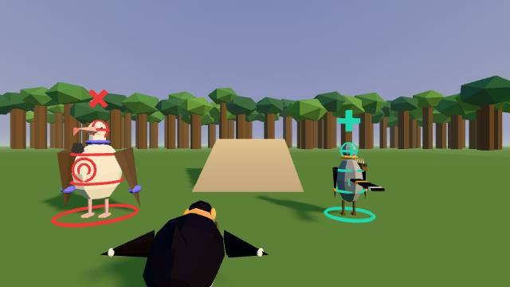
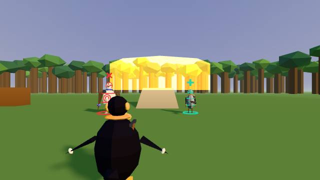
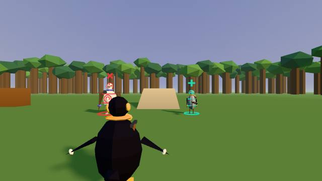

Penguin Playable
Tank / initiator · Playable since Stage 3
Appearance: upright torpedo or bowling-pin body; flipper arms held out from the sides; short waddling legs; bright yellow-orange ear patches and throat. Black back, white front. Reads as "black-and-white skittle with little arms".
How to play
Tanks start fights and soak damage. Take space for your flock, use your big health pool and resists to absorb tower fire, and use your control abilities on the enemies your allies are about to shoot.
Penguin fights with the Ice Chipper, which fires travelling projectiles you have to lead. Damage drops off between 10 m and 25 m, and head hits are beak shots worth ×1.65. Every level above 1 is a Molt: +44 max HP per level; +3% gun damage of base per level; +1 Song power per level; +3 melee damage per level.
Toboggan bowls through groups and lets you cross open ground fast. Huddle shields your flock before a big fight, and Ice Floe slows enemies on the exit route.
Abilities
Four abilities. Slots 1 to 3 unlock at level 1, the ultimate at level 6. Each can be upgraded three times, for 1, 2, 5 AP, in order; see Ability Points. The shortest cooldown in the kit is Toboggan at 16 s.

1. Toboggan
Belly-slide up to 3 s at 13 m/s, steering with the mouse (no gun). Enemies you hit take 60 + 0.6 x SP Song damage and are knocked 4 m aside, once each. Space ends it with a 1.2 m hop.
- Tier 1 · 1 AP+25 damage (85 + 0.6 x SP) damage +25
- Tier 2 · 2 AP-4 s cooldown cooldown -4 s
- Tier 3 · 5 APEnemies hit are knocked up for 0.5 s instead of aside knock up +1
2. Huddle
You and allies within 6 m get a barrier of 180 + 1.5 x SP for 4 s.
- Tier 1 · 1 AP+60 barrier (240 + 1.5 x SP) barrier +60
- Tier 2 · 2 AP+4 m radius (10 m) radius +4
- Tier 3 · 5 APAlso +25% status resist for 4 s

3. Ice Floe
An ice patch of 6 m radius for 5 s: enemies on it are slowed 35%, allies on it get +20% move speed.
- Tier 1 · 1 AP+2 s duration (7 s) duration +2
- Tier 2 · 2 AP+2 m radius (8 m) radius +2
- Tier 3 · 5 APEnemies on it are also grounded

4. Emperor's March
For 3 s you are unstoppable with +40% move speed; enemy heroes you touch are knocked up 1.0 s and take 150 + 1.2 x SP Song damage, once each. It ends with a 6 m slam: 100 + 0.8 x SP Song damage and a 0.75 s stun.
- Tier 1 · 1 AP+1 s duration (4 s) duration +1
- Tier 2 · 2 APSlam stun +0.5 s (1.25 s) stun +0.5
- Tier 3 · 5 AP-30 s cooldown (80 s) cooldown -30 s
Since Stage 3. See all heroes.